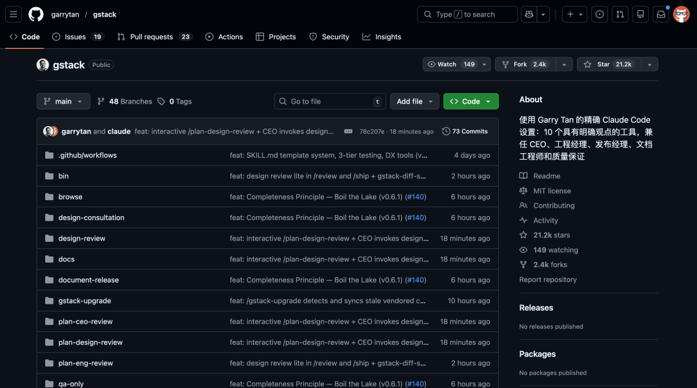
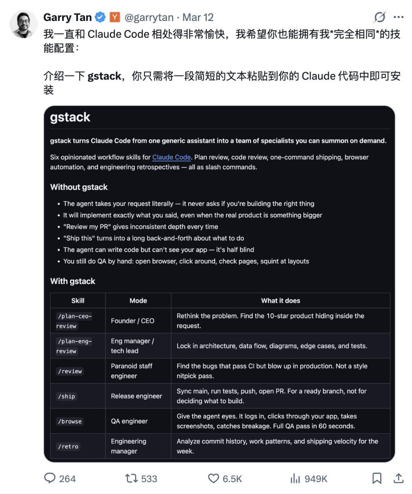
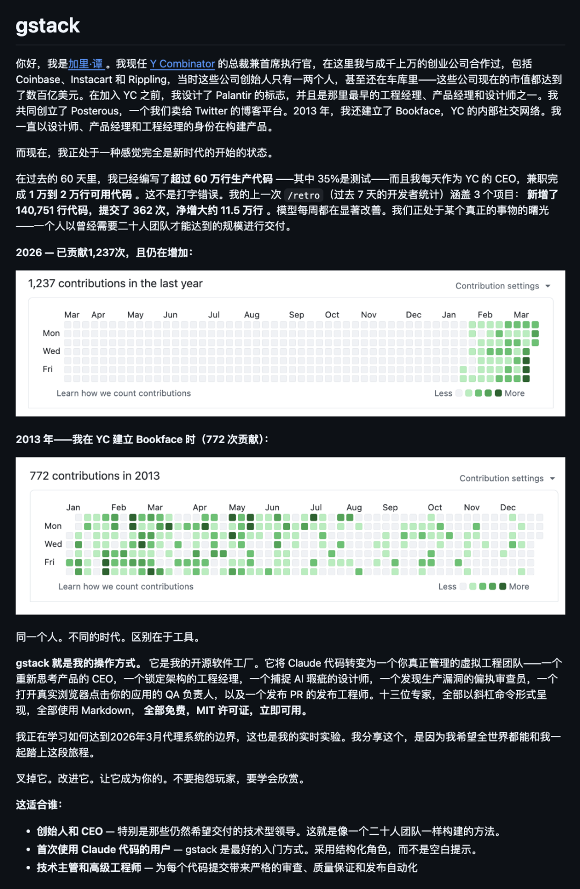
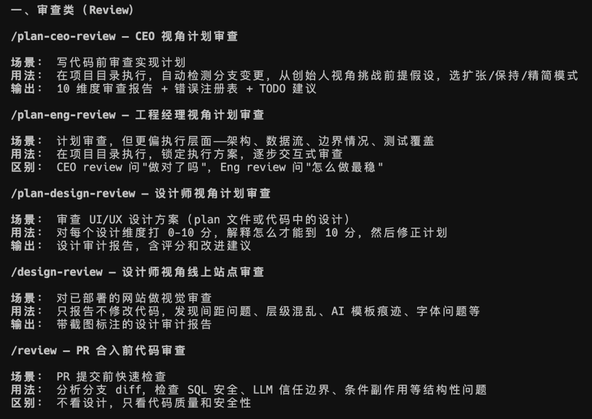
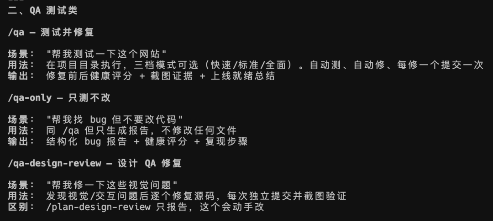
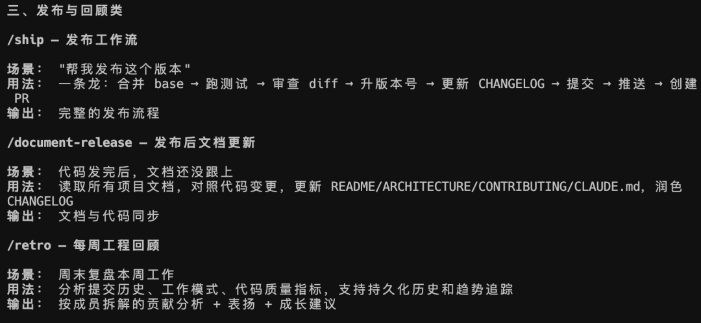
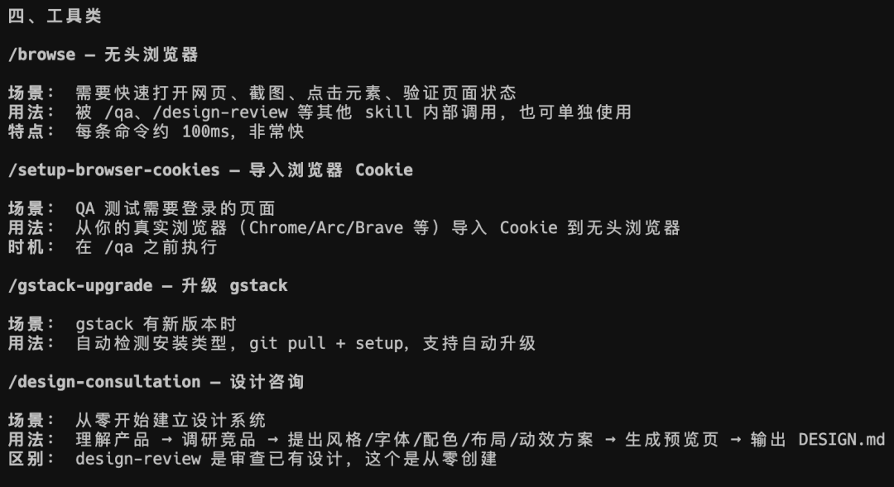

上线 6 天拿下 2 万多 Star，这是一套给 Claude Code 用的 AI 编程工作流。
这个开源项目的作者叫 Garry Tan。
Y Combinator 总裁，投资了很多明星的公司，Twitter 上 70 万粉丝的硅谷大 V。

他之前在推特上说自己对 Claude Code 上瘾，经常搞到凌晨 5 点，用 AI 每天写一万行代码、每天合十几个 PR。
现在他把这套工作流开源了，目前在各平台上都特别火。

同样是用 Claude Code，别人能搞出特别复杂、特别完整的项目，自己做出来的却总像是 Demo。
功能凑合，审美说不过去，细节经不起推敲。
除了模型，还有工作流的差距。
裸用 Claude Code 的时候，你跟它说帮我做个二手市场 App，它就开始吭哧吭哧写代码了。
做出来的东西能跑，但你总感觉哪里不对。
产品方向没人帮你想过，技术方案没人帮你审过，代码质量没人帮你把过关，页面效果它自己都看不到。
一个人干一整个团队的活，结果就是什么都做了，什么都不精。
gstack 的思路是：别让一个 AI 什么都干，给它装上不同人格，每个专精一件事。

和我之前推荐的开源项目 Agent-Agency 很像。
Garry 认为：
"产品规划不等于代码评审，代码评审不等于发布上线，创始人的品味不等于工程的严谨。把这四件事混在一起，你只会得到一个平庸的混合物。我要的是明确的档位。"
gstack 一共提供了 12 个 Skill，每个 Skill 对应一个专精角色——CEO、技术负责人、资深设计师、偏执的 Staff Engineer、发布工程师等
它们覆盖了软件开发的完整生命周期：从想清楚做什么到上线后复盘。
当你安装后，要怎么去用，什么时候用。
直接问你的 Claude Code 就行了。




你会发现，装完这个 Skill。
你的典型工作流都会覆盖，Claude Code 都能帮你解决：
从零设计出设计规范，审好计划再动手写代码，写完先扫代码质量再跑 QA 测到没 bug，最后一条龙发布上线同步文档，周末复盘。
如果你用一下里面的 /design-review 这个 skill。
它会自己访问你给出的一个网站，看看有没有视觉体验问题。
而且浏览器自动化没用 MCP，而是使用了编译 CLI 二进制。
MCP 的问题比较明显。
每次调用都要带完整的 JSON Schema 和协议帧。一次简单的获取页面文本，实际消耗的 Token 是必要信息的 10 倍。
跑 20 步浏览器操作，光协议开销就很难顶。
所以 gstack 的做法是编译成一个 CLI 二进制，接收命令行参数，输出纯文本。
Claude Code 本来就有 Bash 工具，这是最简单的接口。
Token 开销友好。
打开 Claude Code，直接说。
帮我安装这个 skill，安装之前让我看看你的安装计划再执行：https://github.com/garrytan/gstack
等着你的 cc 自己装就行了。
而且 gstack 的 12 个 Skill 不是孤立用的，串起来是一条完整的开发流水线：
① 描述你的需求
② /plan-ceo-review → 压力测试产品方向
③ /plan-eng-review → 敲定技术方案
④ 退出 plan 模式，开始写代码
⑤ /review → 偏执级代码审查
⑥ /ship → 一键发版
⑦ /qa → 系统化测试
⑧ 周五来个 /retro → 本周回顾
gstack 不是装完就不变的。，而且会用得越多越聪明gstack 做了一支分工明确的团队，思路确实可以参考。
什么时候该叫 CEO 想清楚方向，什么时候该叫 Tech Lead 定方案，什么时候该让偏执的 Staff Engineer 审代码，什么时候该让 Release Engineer 一键发布。
一个人不需要什么都会，他只需要知道什么时候该调谁。
04
点击下方卡片，关注逛逛 GitHub
这个公众号历史发布过很多有趣的开源项目，如果你懒得翻文章一个个找，你直接关注微信公众号：逛逛 GitHub ，后台对话聊天就行了：